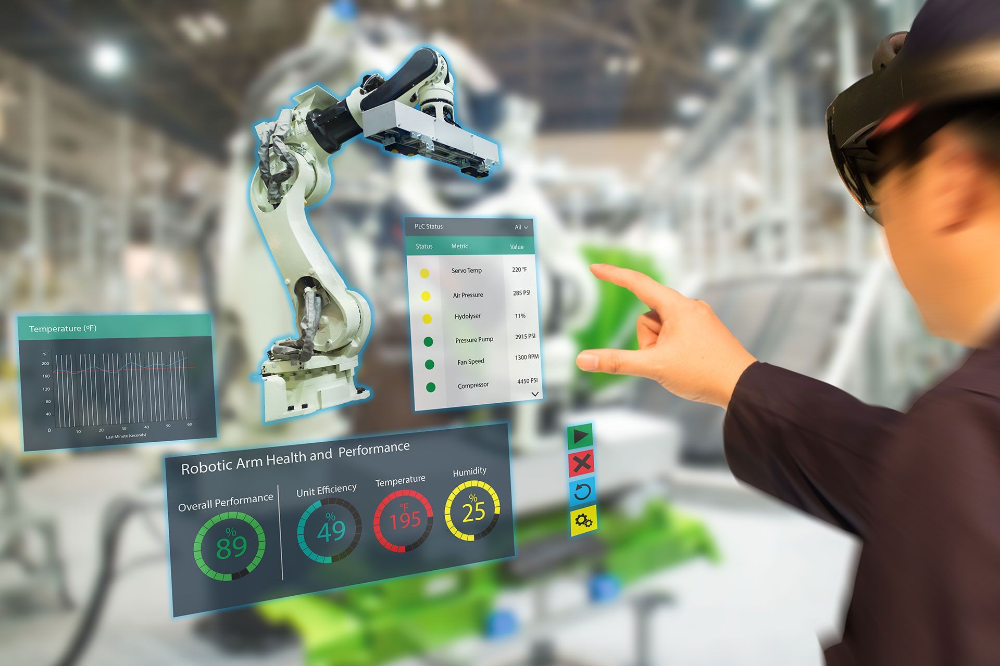

Augmented Reality
The fundamental idea of AR is to combine, or mix, the view of the real environment with additional, virtual content that is presented through computer graphics. Its convincing effect is achieved by ensuring that the virtual content is aligned and registered with the real objects. As a person moves in an environment and their perspective view of real objects changes, the virtual content should also be presented from the same perspective Augmented reality (AR) is a form of emerging technology that allows users to overlay computer generated content in the real world. AR refers to a live view of a physical real-world environment whose elements are merged with augmented computer-generated images creating a mixed reality.
The augmentation is typically done in real-time and in semantic context with environmental elements. By using the latest AR techniques and technologies, the information about the surrounding real world becomes interactive and digitally usable. Through this augmented vision, a user can digitally interact with and adjust information about their surrounding environment.Augmented Reality (AR) as a real-time direct or indirect view of a physical real-world environment that has been enhanced/augmented by adding virtual computer-generated information to it.
Augmented reality is the integration of digital information with the user’s environment in real time. Unlike virtual reality, which creates a totally artificial environment, augmented reality uses the existing environment and overlays new information on top of it. A live direct or indirect view of a physical, real-world environment whose elements are augmented by computer-generated sensory input such as sound, video, graphics or GPS data
Virtual Reality-VR is fully immersive, which tricks your senses into thinking you’re in a different environment or world apart from the real world. Using a head-mounted display (HMD) or headset, you’ll experience a computer-generated world of imagery and sounds in which you can manipulate objects and move around using haptic controllers while tethered to a console or PC. It is also called a computer-simulated reality. It refers to computer technologies using reality headsets to generate realistic sounds, images and other sensations that replicate a real environment or create an imaginary world. Advanced VR environment will engage all five senses (taste, sight, smell, touch, sound), but it is important to say that this is not always possible.
Using VR devices such as HTC Vive, Oculus Rift or Google Cardboard, users can be transported into a number of real-world and imagined environments.The most advanced VR experiences even provide freedom of movement – users can move in a digital environment and hear sounds. Moreover, special hand controllers can be used to enhance VR experiences.
Most VR headsets are connected to a computer (Oculus Rift) or a gaming console (PlayStation VR) but there are standalone devices (Google Cardboard is among the most popular) as well. Most standalone VR headsets work in combination with smartphones – you insert a smartphone, wear a headset, and immerse in the virtual reality.
Augmented Reality
In augmented reality, users see and interact with the real world while digital content is added to it. If you own a modern smartphone, you can easily download an AR app and try this technology.
Example of Immersive Technology
There’s a different way to experience augmented reality, though – with special AR headsets, such as Google Glass, where digital content is displayed on a tiny screen in front of a user’s eye. AR adds digital elements to a live view often by using the camera on a smartphone. Examples of augmented reality experiences include Snapchat lenses and the game Pokemon Go. Augmented Reality (AR) is a live, direct or indirect view of a physical, real-world environment whose elements are augmented (or supplemented) by computer-generated sensory input such as sound, video, graphics or GPS data
Mixed Reality
Mixed Reality (MR), sometimes referred to as hybrid reality, is the merging of real and virtual worlds to produce new environments and visualizations where physical and digital objects co-exist and interact in real-time. It means placing new imagery within a real space in such a way that the new imagery is able to interact, to an extent, with what is real in the physical world we know. For example, with MR, you can play a virtual video game, grab your real-world water bottle, and smack an imaginary character from the game with the bottle. Imagination and reality have never been so intermingled.The key characteristic of MR is that the synthetic content and the real-world content are able to react to each other in real-time.
APPLICATIONS IN AUGMENTED REALITY
AR IN EDUCATION
Augmented reality allows flexibility in use that is attractive to education. AR technology can be utilized through a variety of mediums including desktops, mobile devices, and smartphones. The technology is portable and adaptable to a variety of scenarios. AR can be used to enhance content and instruction within the traditional classroom, supplement instruction in the special education classroom, extend content into the world outside the classroom, and be combined with other technologies to enrich their individual applications. More importantly, the following reasons for using augmented reality in education.
• Affordable learning materials – posters, digital illustrations, physical models, prototypes are very expensive and it’s impossible for schools to find enough money to purchase all the supplementary materials they would like to. Using AR technology allows for avoiding investments in physical materials. Besides, students can get access to learning materials and interact with them anytime.
• Interactive lessons – when AR technology is used in classrooms, students can view models on their own smartphones and get a better idea of the concepts they are studying. That increases engagements and reinforces the learning.
• Higher engagement – when teachers integrate augmented reality into their lectures, they attract the attention of their students and make lessons more effective. When students are interested, it is much easier to make them work more productively.
Higher retention – using the AR app, students can get access to augmented models that represent any real objects from a famous monument or work of art to a molecule. Besides, students can get access to a website with specific information. When learning with AR technology, students use different senses and retain more knowledge for a long time.
• Boost intellectual curiosity – augmented reality makes students more excited about learning certain subjects. Modern students were born in a digital era so they will always be excited with innovative technologies that can help them learn new ideas and develop their critical thinking skills
AR IN MEDICINE
Augmented reality is one of the current technologies changing all industries, including healthcare and medical education. The purpose of any invention and technology is to simplify our life. Augmented reality has the potential to play a big role in improving the healthcare industry. Only a few years since the first implementations of augmented reality in medicine, it has already filled an important place in doctors’ and nurses’ routine, as well as patients’ lives. This new technology is enhancing medicine and healthcare towards more safety and efficiency. For now, augmented reality has already made significant changes in the following medical areas:
• surgery (minimally invasive surgery);• education of future doctors;• diagnostics;• AR tools may also aid to detect the signs of depression and other mental illnesses by reading from facial expressions, voice tones, and physical gestures.
Watch YouTube VideoAugmented Reality
Watch YouTube VideoAugmented Reality in Education
Watch YouTube VideoAugmented Reality in Medicine